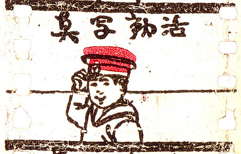

Аниме (японская мультипликация) берет свое начало в XX веке, когда японские кинорежиссёры начинают первые эксперименты с техниками мультипликации, изобретёнными на Западе. Старейшая из известных сохранившихся японских анимаций — «Katsudo Shashin» длится всего 3 секунды

«Katsudo Shashin» - Кацудо Сясин